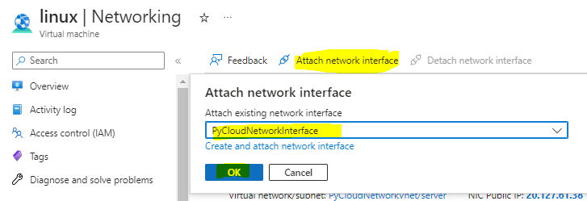

Virtual Network
Virtual Network can have many Address Space and Subnets


Cost of IP Addresses
https://azure.microsoft.com/en-us/pricing/details/ip-addresses/

Create public IP address
attaching the public IP address to the VM
- ip address cannot be directly attached to VM.
-
its attached it Network interface which is attached to VM

- steps
Attaching addition Network Interface to the VM
- first you need to create new Network Interface.
- you need to create this Network Interface in the same Virtual Network and Subnet where the VM exist.
- then you need to stop the VM. else it won't allow the attaching of the Network Interface


